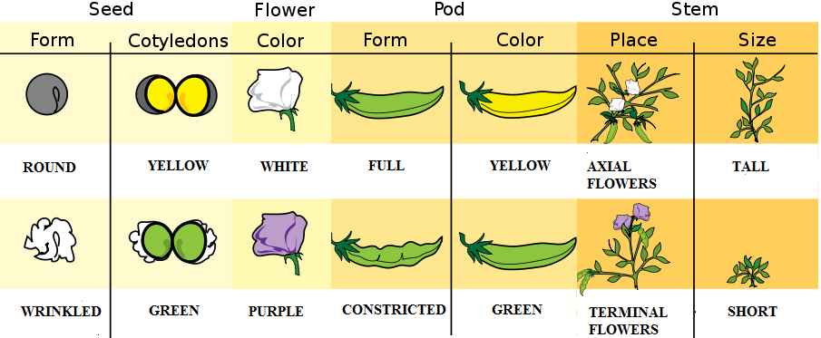
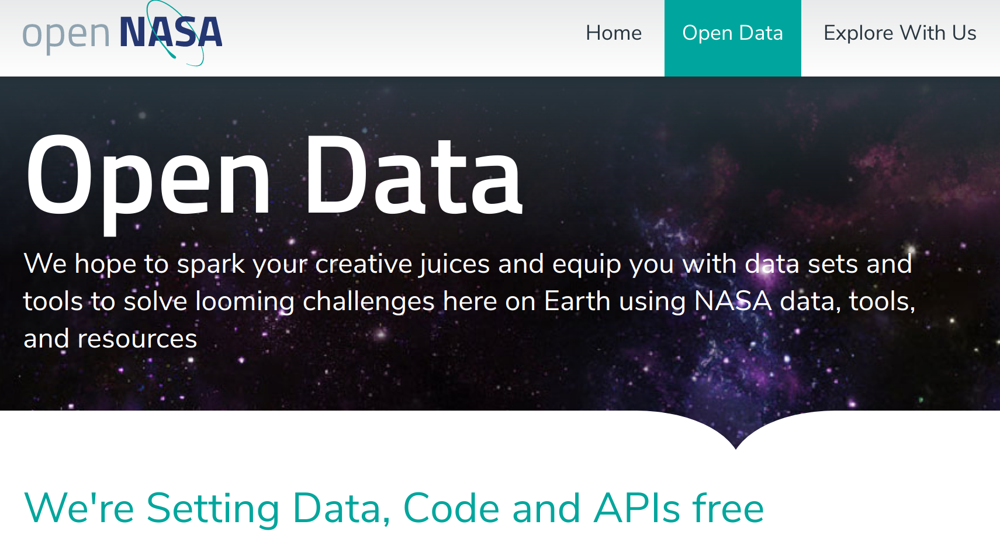
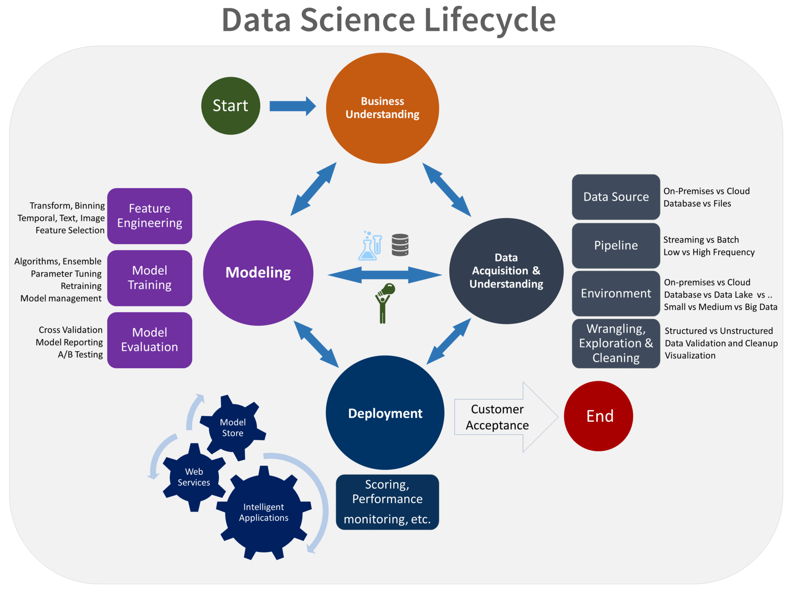

Data Science 101
Khoa Công Nghệ Thông Tin
Trường Đại học Sư Phạm TP.HCM - Việt Nam
Data Science 101
Phần 1.
Giới thiệu tổng quan
ngành Khoa Học Dữ Liệu
Presented By
Nguyễn Đặng Kim Khánh
Giảng Viên trường ĐHSP TP.HCM
Data Science 101
Đối tượng và nhiệm vụ nghiên cứu
Data Science 101 / Đối tượng và nhiệm vụ nghiên cứu
We learnt from data at the very first beginning
About every two years, the Earth passes Mars as they orbit around the Sun (Credit: NASA)

The characteristics of the pea plants studied by Gregor Mendel (Credit: Wikipedia)
Data Science 101 / Đối tượng và nhiệm vụ nghiên cứu
Data in modern age
Big Data (Velocity, Volume, Variety, Veracity)
Public Data

https://open.nasa.gov/open-data/
Data Science 101 / Đối tượng và nhiệm vụ nghiên cứu
Tóm lại
Đối tượng nghiên cứu: (big) data
Nhiệm vụ nghiên cứu:
Probing reality
Pattern Discovery
Predicting future events
Understanding people and the world
with minimal human intervention
Data Science 101
Phương pháp đánh giá khách quan
"Máy tính có khả năng nhớ 1 lượng dữ liệu khổng lồ. Do đó học vẹt là ưu thế của nó."
Data Science 101
Phương pháp đánh giá khách quan
Nguyên lý cơ bản: test trên unseen data
Như thế nào là unseen data?
Unseen data là dữ liệu không được dùng trong lúc training!?
Unseen data là dữ liệu không được dùng trong lúc fine-tuning
Các kiểu đánh giá:
Cross validation
A/B testing
Data Science 101
Data Science Life Cycle
Data Science 101
Data Science Life Cycle

Image Source: https://docs.microsoft.com/en-us/azure/machine-learning/team-data-science-process/lifecycle
Data Science 101
Data Collection
Data is the new gold
Data Science 101
Data Collection
Data Privacy & Data Policy
Automated tools for web crawling:
Beautiful Soup
Selenium
Data Science 101
Data Preprocessing
Data Science 101
Data Visualization
Data Science 101
Data Visualization
Matplotlib
Seaborn
Data Science 101
Thắc Mắc và Trao Đổi